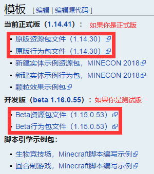

欢迎学习附加包！
本教程将带你大致了解附加包，并一步步带你理解附加包的主要内容。
本教程将不定期更新。
说明：
1.本文发布遵循CC BY-NC-SA 3.0协议。
2.注释符号：【】、（）。
3.教程作者：JUSTIN_LMC【QQ：371055087】，本教程有任何不完善之处欢迎和本人讨论。
4.更新信息：Version 1.0.0-beta20210122/1.16.200
本文参考/涉及链接：（排名不分先后）
感谢 @蛋黄小饼干 给予的主要技术指导。
在这里向前人们表示敬意。
本文可能涉及侵权内容，如有请立即联系本人删除。
| 概 念 |
|---|
| 初 学 |
| 结 构 |
| 编 写 |
尾 声 |
概念
1.什么是附加包？[1]
wiki[2]这样说道：
这是一个很难回答的问题。总的来说，它是一种通过Mojang给定的途径（JSON）修改整个游戏各种设定的工具。目前可以修改的内容大约有十几二十项，但几乎每一项都包含大量要学习的内容。
[1]Mojang附加包官方页面
[2]如果想了解更多信息，欢迎来原文看一看。
2.附加包的类型？
附加包主要有以下几个类型：
| 类型 | 名称[1] | 介绍（各部分后续将会详细介绍） |
| *[2]行为包 | data | 决定了生物、物品、方块、合成等特性【服务端】 |
| *资源包 | resources | 决定了生物的动画、模型、粒子效果、材质等特性【客户端】 |
| 脚本包 | client_data | (ONLY IN Windows 10)控制了世界与玩家的交互 |
| 皮肤包 | skin_pack | 决定了玩家的可选皮肤 |
| 世界模板包 | world_template | 决定了世界的模板 |
[1]名称此处均指清单文件模块内名称。
[2]接口包(interface)无资料，暂空。
[3]*内容为重点讲解内容。
以上每一个类型的包或者多个不同类型的包整合在一起均可称为附加包[1]。
[1]严格来说，只有行为包、资源包或脚本包及将以上三者任意整合在一起才能被叫做附加包。另一个常见名词混搭包，常包括资源包、皮肤包、世界模板包。
1.附加包需要的基础？
JSON。
【Windows 10玩家请注意：如果你愿意研究Scripting Engine（SE，脚本引擎），那么你还需要了解Javascript，不过脚本引擎目前只在win10版本支持（有小道消息称手机版本会采用JSON作为脚本“语言”，姑且当个笑话听）】
引用自百度百科：
简单来说，就是一种{A:c,B:d}的格式，非专业人士不必深入研究。
JSON的格式可以参考SPG帖子或者JSON的官方网站的介绍，前者目前是国内最详细的行为包讲解教程之一。
将JSON格式化的网站。
此外，命令也是必须掌握的基础。存档构造后续略有涉及，可不必深究。
2.附加包很难吗？
确实。
附加包每一项内容几乎都非常丰富，比如实体就是一个重头戏。学习前应当做好心理准备。
推荐新手去找一位师傅学习（不是我，学业太忙没空）。
3.附加包研究时需要的工具？
以下工具均值得信赖（大多数是IDE[1]）：【斜体为文本编辑器，蓝色为文件管理器，两者均至少需要一个[2]】
| Windows 10 | VSCode或VSCommunity | Notepad++ | Eclipse | Windows自带（请自备压缩软件） |
| Android | ES文件管理器 | MT管理器 | QuickEdit | 部分手机自带（仍然建议不用） |
| IOS | Textcode Viewer | （越狱）iFile |
（越狱）Filza |
FileMaster |
当然，如果你自己有上手的工具也可以使用（不要用什么备忘录、记事本！）。[3]
[1]摘自搜狗百科：集成开发环境（IDE，Integrated Development Environment ）是用于提供程序开发环境的应用程序，一般包括代码编辑器、编译器、调试器和图形用户界面等工具。集成了代码编写功能、分析功能、编译功能、调试功能等一体化的开发软件服务套。所有具备这一特性的软件或者软件套（组）都可以叫集成开发环境。如微软的Visual Studio系列，Borland的C++ Builder、Delphi系列等。该程序可以独立运行，也可以和其它程序并用。IDE多被用于开发HTML应用软件。例如，许多人在设计网站时使用IDE（如HomeSite、DreamWeaver等），因为很多项任务会自动生成。
[2]画图、建模软件将在后续教程中推荐。
[3]表格中列出的软件，其用途均不仅限于附加包制作，如果感兴趣可以自行搜索。
4.客户端和服务端的区别？
客户端，指的是某种数据接收终端，比如手机、电脑；服务端，指的是某种数据处理中心，比如服务器。具体可自行搜索。
附加包中有一部分内容是在服务端定义的（如行为包），另一部分内容是在客户端定义的（如资源包），后文中将会讲解。
5.网易版有Add-ons吗？
有，而且比原版更加全面，但是与原版Add-ons并不适配。如果你想开发网易版Add-ons并且上传自己的作品，必须先加入开发者计划。由于网易设计了自己的接口（ModSDK），请点击该链接获取更多帮助：我的世界开发者工具。
在网易的资源中心里能找到丰富的网易版Add-ons。
结构
“|-”表示文件的储存结构，即一个文件夹的内部。
行为包
资源包
脚本包
除了行为包的结构，另加一个scripts文件夹（内含client和server文件夹，两个文件夹内各有(name).js文件）
皮肤包
世界模板包
实际上，世界模板包只需要将你的世界提取出来，加上清单文件即可。
| 附加包的基本常识 | |
| 清单文件 | |
| 内容文件 | |
| 行为包、资源包专题 | |
| 配方 | 物品（武器） |
| 脚本包专题 | |
| 皮肤包专题 | |
| 世界模板包专题 | |
你可能感兴趣的：如何从MCPEDL下载我想要的附加包？
附加包的基本知识
1.如何创建一个附加包？
（以下仅限手机，win10用户请看SPG贴）
如果存储方式为“外部”，那么游戏的数据储存于/sdcard/games/com.mojang/；如果存储方式为"内部存储"，那么游戏的数据储存于/私有储存/com.mojang/"。各类包的存储路径见下表。
| 行为包/脚本包 | 资源包 | 皮肤包 | 世界模板包 |
| ../com.mojang/behavior_packs | ../com.mojang/resouce_packs | ../com.mojang/skin_packs | ../com.mojang/world_templates |
../com.mojang/development_(name)_packs储存着正在开发的(name)包。为了便于日后查找，一般选择在外部建立一个文件夹，待调试时再将对应的(name)包放入../com.mojang/development_(name)_packs中。Mojang 建议文件名采用英文小写字母+下划线分割单词，总长度控制在 10 个字符以内。
之所以在../com.mojang/development_(name)_packs内建立包，而不是在(name)_packs，是因为游戏会在加载行为包时自动把外部的行为包在存档内做一个缓存。这会导致对行为包的改动不能实时反应到游戏里，造成调试困难。当你把行为包建立在development_behavior_packs里面以后，游戏不会进行缓存，想要重载行为包只需要退出世界重进即可。[1]
[1]以上参考SPG贴，有改动。
2.如何导入一个附加包？
对于后缀为.mcpack(单个行为/资源/脚本/世界模板/皮肤包)或.mcaddon(可能包含单个或多个行为/资源/脚本/世界模板/皮肤包)的文件，选择用Minecraft打开即可导入附加包。
对于文件夹形式的附加包，将对应的包放在没有development_前缀的对应的文件夹内即可。
在开始之前，希望各位回顾一下结构。
清单文件（manifest.json）是整个包里最为重要的一个文件，它用于让游戏辨识这个包的基本信息。游戏在读取包时第一个就读取该文件。因此，请一定注意你的清单文件是否有语法错误。自然，每个包都必须有这个文件。
下面是一个完整的包文件示例：（通用规则：如果没有注释，默认为“可选”，即可以填入，也可以不填入；“可选”内部有“必填”，表示如果填入则“必填”必须填入）
[1]语义化版本（版本号[ a, b, c ]格式）链接：https://semver.org/lang/zh-CN/
[2]uuid生成器：https://www.uuidgenerator.net/
内容文件（contents.json）是整个包里仅次于清单文件重要的文件。它相当于一个包的目录。格式：
一般来说，这个文件不建立也没有太大问题——如果不建立，游戏会调用原版包里的目录文件，而你的包里的文件依旧会被识别[1]。用程序生成内容文件最为方便，但如果没有相关能力则不必逞强。
[1]以上参考@Bilibili方法放寒假，有改动。
接下来的内容将会占据本文的绝大多数内容。这一部分内容分为几个部分：配方、物品、方块、战利品表、交易、命令函数、语言文件、生物、生物群系、渲染、字体、粒子、声音、UI（HUD）。
在正式开始之前，建议下载官方示例包。
方法在这里：
1.点击链接
2.见图（图已经老得不行了，将就着看吧）

3.下载下来后，建议各位自己创建一个文件夹，用于保存你所制作的包以及各种参考资料等等。在你下载下来的行为包里会有一个Document文件夹，里面的内容被叫做官方文档，是非常重要的资料，在后文也会反复多次地引用。
P.S.
1.如果你对安装包这方面略懂，请提取出游戏的apk，找到assets/behavior_packs和assets/resource_packs并解压。这两部分内容是最适合你当前版本的参考资料，大部分示例都从这里抽取。
2.不建议各位用测试版写附加包……鬼知道麻将未来怎么改（
| 类型 | 英文 | 简述 | |
| 熔炉配方 | Furnace Recipe | 熔炉、高炉、烟熏炉 | |
| 药水配方Potion Brewing ... | 药水类型类 | ... Container Recipe | 水瓶→喷溅药水→滞留药水 |
| 药水效果类 | ... Mix | 水瓶→粗制药水→…… | |
| 合成台配方(Crafting table) | 有序合成 | Shaped Recipe | 镐子、斧子、锄头…… |
| 无序合成 | Shapeless Recipe | 兔肉煲、蘑菇煲…… | |
| 切石机配方 | (Stonecutter Recipe) | 半砖、楼梯、墙…… | |
配方的内容放在<行为包>/recipes内部。
在开始之前，请确认你已经理解JSON格式——接下来将直接使用相关术语并且不加以解释。
有序合成
下面是acacia_boat.json文件：
[1]所有类型配方中所有键值对均为必填。
无序合成
下面是rabbit_stew_from_brown_mushroom.json文件：
熔炉配方
下面是furnace_beef.json文件：
[1]建议各位命名文件时将文件名语义化，如熔炉配方的文件名为furnace_...
切石机配方下面是stonecutter_andesite_slab.json文件：
药水配方
药水类型类
下面是原版唯二的药水类型类的药水配方：
药水效果类
下面是brew_awkward_blaze_powder.json文件：
[1]目前不建议各位修改药水配方，因为自定义物品还不够完善，无法与药水配方实现联动。
EXAMPLE
附加crafting_T1展示了自定义配方的几个示例。
接下来的讲解将会经常运用纲要(Schema)[1]的写法来说明JSON格式。纲要就是没有引号，没有缩进的非正式JSON写法，有的时候一部分字母和符号会被省略。
行为包内的物品定义放在<行为包>/items内部。
选择版本：
[1]纲要的概念为MOJANG特色（不一定是原创）。
[3]参阅wiki获取更多信息。
资源包的物品定义放在<资源包>/items里，材质定义放在<资源包>/textures/items里。
物品的材质其主要问题还是画图软件。推荐软件：像素小画家、Isopix Pro、Pixel Studio（手机）（强烈推荐最后一个）；Adobe Photoshop、Blender（电脑）（Blender的功能非常强大，绝不仅仅是画图）
关于软件的具体操作就不说明了，留给各位自己去探索。
另外，官方的材质一般是16*16大小的；超过16*16也可以，游戏会自动缩放材质以与正常大小相匹配，一般取2^N,N>=4。这也就是高（zha）清（ji）材质包的原理。
EXAMPLE
附件item_T1展示了自定义物品的几个示例。